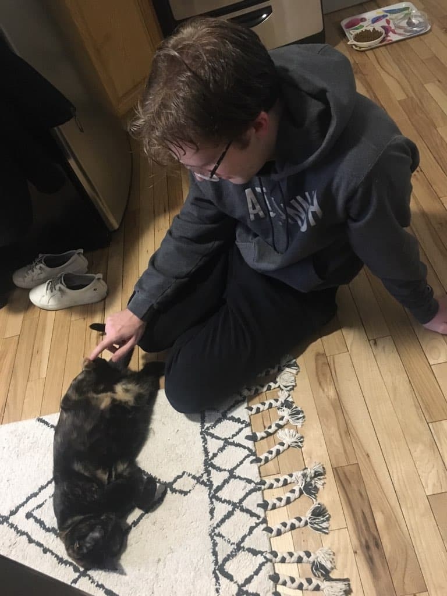

There was big news the previous evening. Marcus got back to me and said that he doesn't want to work on the databrowser. He did thorough research and concluded that the semantic web devtools would be too annoying to work with. I know the dev tools aren't very well developed, so I get where he's coming from. I always just thought of it as a hurtle to overcome rather than a complete deal-breaker. But, if I put myself in Marcus's shoes, he's not a semantic web evangelist. He's just a great developer, and someone who is able to tell if he's going to hate something before going into it. He did acknowledge that the semantic web is probably the best way to approach the problem Solid is trying to approach, but even then the dev tools are still too underdeveloped. I think another aspect is that the most developed dev tools are written in JavaScript and Marcus hates JavaScript.
I'd be lying if I said I wasn't sad to see Marcus go. He's one of the best developers I know and he'd be amazing for this project. The fact that he read the entire Solid spec and had so much to say about it even before coming on the project just proves that. But, I need to adapt and turn to other options for hiring.
On Wednesday, I quickly met with Brad to go over the presentation. He seemed pretty excited about it and only had a few nitpicks that I noted down. He agreed that I shouldn't be projecting revenue but rather users, so I'll work on a growth model. Meanwhile, he'll assemble a list of investors.
Next was a meeting with Tim, but he didn't show up, and 45 minutes into the meeting, he messaged me saying that the previous meeting went long, and that now was a good time to meet, but then ghosted me. It made me feel a bit dejected. So, I reached out to him and Olivia to stress the importance of knowing where Tim stands on funding, and we rescheduled for Friday. I don't think there was anything malicious. Tim is sometimes just a hard person to pin down.
Overall, it wasn't the best day, but it certainly doesn't kill my spirit. There are a lot of doors open, I just need to be adaptable.
On Thursday and Friday, I worked on some more IdP tests. These are monotonous at this point, so not a lot to report on.
Once I completed my tests for the day, I began work on the growth model, outlining plans for user growth. But, I found I couldn't project that until I knew how long it would take to build an MVP. The Next-Gen Databrowser is quite a complicated product and will take significant engineering work. So, I took notes on every task that needed to be completed and estimated the time it took to do each task. I know these predictions are probably very wrong, but it gave me a rough estimite of what it would take to build, and helped me think out certain aspects of the product.
I also reached out to my friend Andrea Hu on Thursday to see if she would be interested in joining me. She said she'd be thinking of leaving Google and would look at the pitch deck. Though, I haven't heard back from her, I'm still hopeful. She's a talented back end engineer who I think has her talents wasted building integrations for the Google store.
Finally, the moment we've all been waiting for arrived: the meeting with Tim. I gave him an update on all the things I've been doing before we got into the details about funding. According to Tim, John (Inrupt's CEO) has barred Tim from funding a Next-Gen Databrowser. That kinda sucks. I don't know how I feel about Tim getting barred from funding by Inrupt. But it's fine. I have other funding avenues. I asked Tim if he'd want to be an official advisor if not an investor, and he said yes, but he would need to explore the legality of it. Given John's blockage of funding, I don't have high hopes, but I would still love for Tim to be onboard.
While the outcome was disappointing, it feels good to finally know where Tim stands. That means I can be 100% focused on other investing opportunities.
Saturday was a fun day of rest. Ailin and I went to the MoMA! Here are some pictures:
The two last images are pretty cool. I especially enjoy how they play with abstract perspective and texture. After seeing them I couldn't help but think that this would be a perfect style for the archictecture of the Legacy Society in Star Jump.
For lunch, we had to leave the museum to pick up food from a food cart. We saw a cart that we thought was Halal guys, but was actually "The Original Guys," a rip off cart with the exact same branding. Ailin even pointed at the actual Halal guys cart and I asked the guy at the Original Guys about it. Of course he said that they were the same thing. I'm such an idiot hahaha.
We eneded the day by getting dessert from Times Square and going home to watch Pixar's Soul. One of the ads in Times Square advertised Raya and the Last Dragon on Disney Plus, and that reminded us that we wanted to get Disney Plus. So, good job ad. You did your job.
After a day of fun, Ailin and I both needed to get back to work. She needed to work on her her Georgia Tech pre-classes before she could apply for a Georgia Tech masters in computer science (I'm so proud!), and I needed to complete the growth model. I updated the pitch deck to reflect my findings and sent it to Brad for review.
At the end of the day, I asked Jonathan White about his opinions on early stage venture firms, he called me so we could talk about it. Jonathan is a wealth of information. It helps that he raised his early seed round a couple of months ago, so the ecosystem is fresh in his mind. He recommended 10 great investors to explore and gave some fantastic advice about how to pitch my specific product. I was feeling decent before with the help of Brad, but now that I have the help of Jonathan, I'm feeling amazing about raising money.
The day started with a code review of my work on the IdP. Ruben agreed that we're good for a handoff after I make some minor changes, and I discussed the handoff with Emmet over chat.
I've also had trouble sleeping over the past week. I think exercising more might help with that, so that's what I'm planning to do.